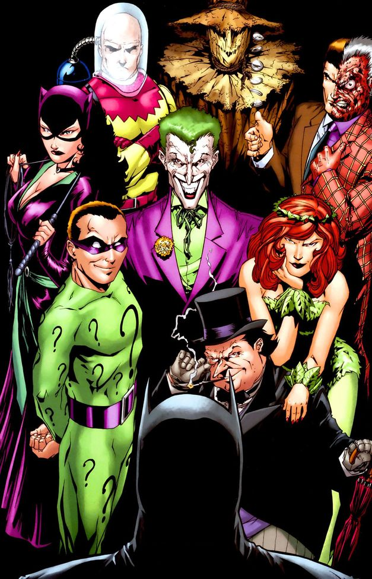

About Batman
One of the most iconic fictional characters in the world, Batman has dedicated his life to an endless crusade, a war on all criminals in the name of his murdered parents, who were taken from him when he was just a child. Since that tragic night, he has trained his body and mind to near physical perfection to be a self-made Super Hero. He's developed an arsenal of technology that would put most armies to shame. And he's assembled teams of his fellow DC Super Heroes, like the Justice League, the Outsiders and Batman, Incorporated.
A playboy billionaire by day, Bruce Wayne’s double life affords him the comfort of a life without financial worry, a loyal butler-turned-guardian and the perfect base of operations in the ancient network of caves beneath his family’s sprawling estate. By night, however, he sheds all pretense, dons his iconic scalloped cape and pointed cowl and takes to the shadowy streets, skies and rooftops of Gotham City.
Batman gliding down the roof-top of Gotham city
Batman's Characteristics
- He is wealthy
- He's got an arsenal of advanced technological gadgets and weapons
- He is very intelligent and calm
- He is well-skilled in the martial arts
- He is charistmatic and determined to fight crime in Gotham city
Batman's Allies
Batman's allies are generally masked vigilantes who either have been trained by him or operate in Gotham city with his tacit approval. Batman is often the team leader,or in some cases, it's dispatch. Click on the links below to read more about them:
Batman's Arch Enemies
Some of Gotham city's Supervillains and Batman's primary enemies
Batman confronting his arch enemies